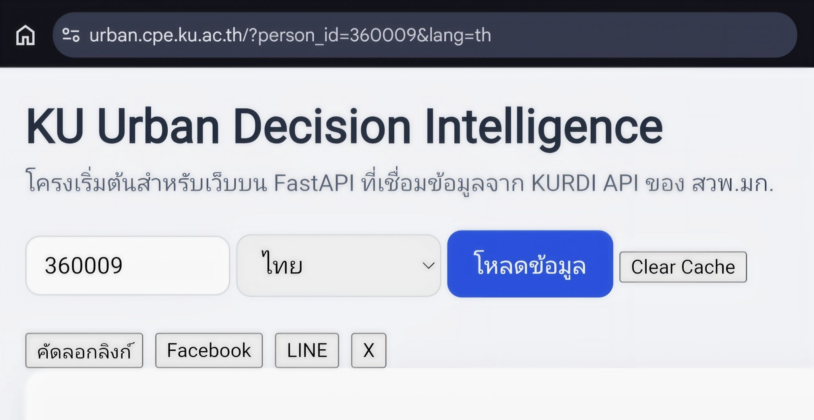
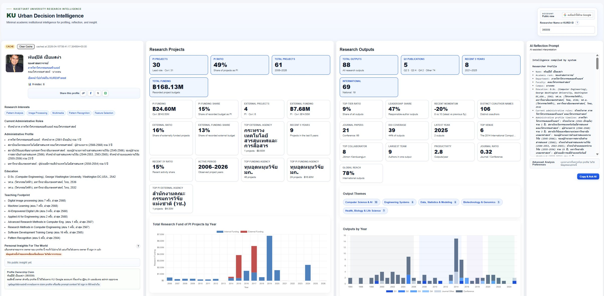

Research profile from KU Urban
ดึงข้อมูลจากผลค้นหา urban มาแยกเป็นกลุ่ม publication, project, concept และ collaborator ก่อนจัดเป็นหน้า portfolio ที่อ่านง่าย
หน้านี้จะใช้รวมงานวิจัยจริงและโครงการที่มีผลลัพธ์ชัดเจน โดยแหล่งข้อมูลหลักจะอ้างอิงจาก KU Urban Decision Intelligence ซึ่งรวบรวมข้อมูลนักวิจัย โครงการ ผลงาน และแนวคิดที่เกี่ยวข้อง
ใช้ผลค้นหาจากระบบ KU Urban เป็นฐานสำหรับจัดหน้างานวิจัย: รายชื่อนักวิจัย โครงการ ผลงานตีพิมพ์ แนวคิด และความเชื่อมโยงของข้อมูล จะค่อยถูกย้ายมาเรียบเรียงเป็น portfolio ในเว็บนี้

ดึงข้อมูลจากผลค้นหา urban มาแยกเป็นกลุ่ม publication, project, concept และ collaborator ก่อนจัดเป็นหน้า portfolio ที่อ่านง่าย

จัดโครงการและ prototype ที่เกี่ยวข้องกับ urban analytics, applied AI และระบบข้อมูลเพื่อการตัดสินใจออกจากบทความทั่วไป

แยกวิธีทำงาน ชุดข้อมูล pipeline และวิธีวิเคราะห์ออกมาเป็นส่วน research method เพื่อไม่ปนกับบทความเล่าเรื่อง

รวบรวมผลงานตีพิมพ์ ผลลัพธ์ของโครงการ และผลกระทบที่ตรวจสอบได้จากฐานข้อมูลหรือแหล่งอ้างอิงที่เหมาะสม